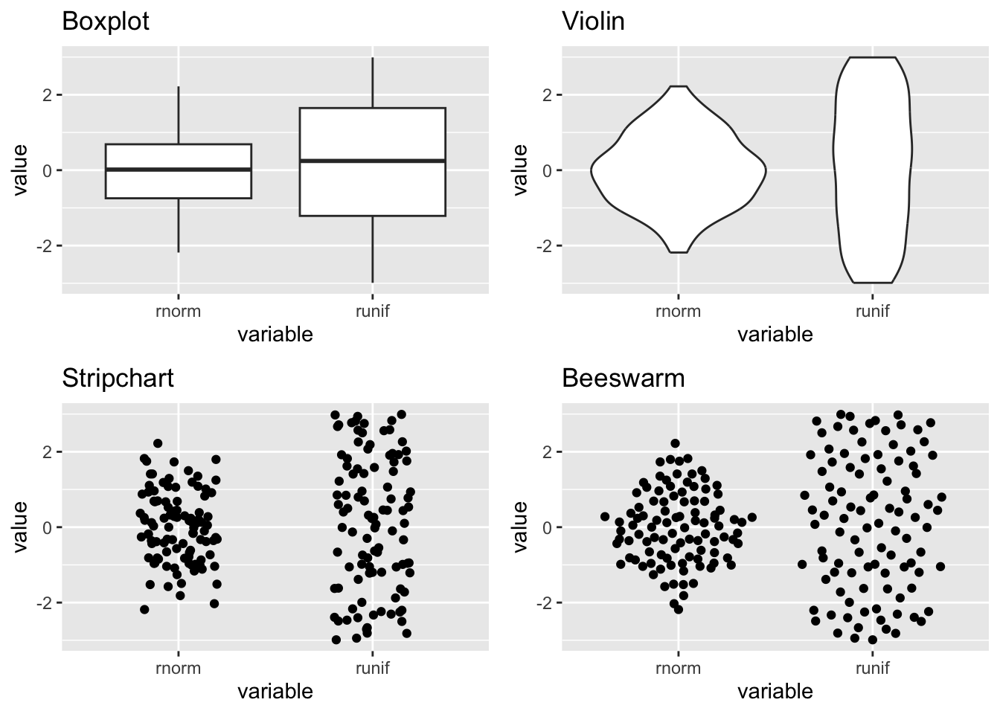

Beeswarm plots are a thing. Duncan made a beswarm plot that looks like a beeswarm and I animated it.
How to plot grouped continuous data?
A boxplot lets you show continuous data split by categories, but it hides the data points and doesn’t tell you much about distribution. A violin chart will show the distribution but you still don’t know about the density of data.
Stripcharts show the data for each category as individual points. The points can be layered on top of each other where they take the same Y value and can be stretched arbitrarily along the X axis.
If you don’t have too much data, or if you sample it, you can stop the data points in a stripchart from overlapping and instead line them up side by side where they take the same Y value. This is called a ‘beeswarm’. Why? Probably because the cloud of data you’re plotting looks a bit like a swarm of bees.
Below is how the plots look side by side.
library(ggplot2) # for plottinglibrary(ggbeeswarm) # more on this laterlibrary(cowplot) # arrange plots# Create data setdata <-data.frame("variable"=rep(c("runif", "rnorm"), each =100),"value"=c(runif(100, min =-3, max =3), rnorm(100)))# Generate different plot typescanvas <-ggplot(data, aes(variable, value)) box <- canvas +geom_boxplot() +ggtitle("Boxplot")violin <- canvas +geom_violin() +ggtitle("Violin")strip <- canvas +geom_jitter(width =0.2) +ggtitle("Stripchart")bee <- canvas +geom_quasirandom() +ggtitle("Beeswarm")# Arrange plotsgrid <-plot_grid(box, violin, strip, bee)print(grid)

Obvious next step
We can test this theory by plotting the points as actual bees, lol. Well, emoji bees. Duncan (of {tidyxl} and {unpivotr} fame) did exactly this and tweeted the plot and code.
Wouldn’t it be great if the little emoji bees moved around a little bit? Almost like a waggle dance?
I cheated a little bit and recoded the geom_quasirandom() function from {ggbeeswarm} instead of geom_beeswarm(). Why? Beeswarm plots have an inherent ‘neatness’ to them. That is not becoming of a beeswarm. Instead, geom_quasirandom() gives you some ‘random’ jitter each time you plot the data.
Now we can create a few versions of this plot with different jittering. The plots are magick-class objects made with image_graph() from the {magick} package.
We can loop through a few plots, each representing a frame in the final gif.
And now image_animate() can be used to combine those magick objects into a gif.